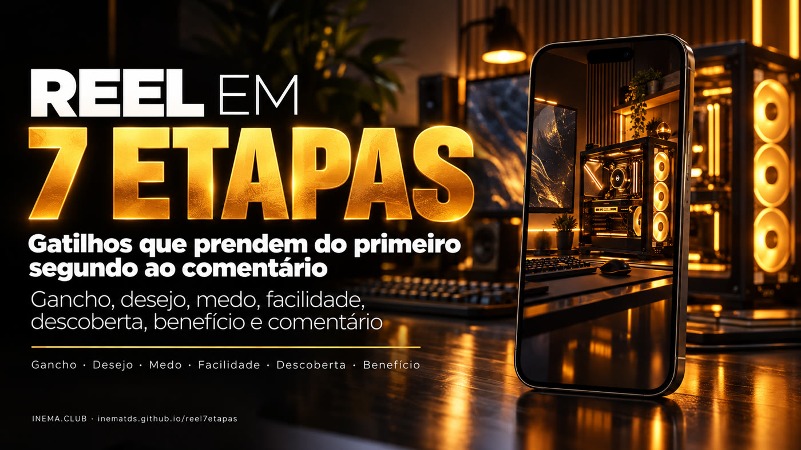
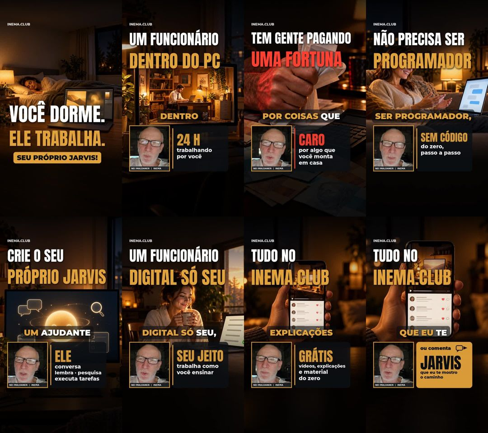

Gancho, desejo, medo, facilidade, descoberta, benefício e comentário — cada etapa entra na palavra certa da fala, com imagem, manchete e painel próprios. Termina com um "COMENTA <PALAVRA>".

O reel7etapas é um modelo para escrever vídeos curtos (Reels, Shorts, TikTok) e uma ferramenta que monta esses vídeos sozinha. O roteiro segue sempre a mesma ordem de 7 etapas, pensada para segurar quem está rolando a tela e terminar com um pedido simples: comentar uma palavra. Serve para quem cria conteúdo e quer um caminho repetível, em vez de começar do zero a cada vídeo. Para só usar o modelo, basta ler a tabela das 7 etapas; para gerar o vídeo, a ferramenta usa o avatar do Nei no HeyGen, imagens geradas pelo Codex e um script em Python.
Mostrar o resultado antes de explicar a tecnologia. A pessoa entende o benefício em 2 segundos e fica para saber como conseguir.
Sete etapas, sempre na mesma sequência. Você troca o assunto, a estrutura fica.
Avatar falando, uma imagem por etapa com movimento de câmera, manchete e destaque que entram na palavra exata e legenda curta, tudo dentro da zona segura do 9:16.
O comando mapa gera uma folha com as 7 etapas lado a lado: o quadro do vídeo, o gatilho e o porquê.
Desejo → medo de estar gastando à toa → facilidade → descoberta → benefício → comentário, abertos por um gancho visual. Os exemplos são do reel "Seu próprio JARVIS".
O resultado que qualquer um quer, em 2 segundos, numa frase enorme. "VOCÊ DORME. ELE TRABALHA." e a fala "Você sabia que o seu computador já pode trabalhar enquanto você dorme?"
A pessoa se imagina com o que quer. "Já pensou em ter um funcionário dentro do seu computador?"
O risco de perder dinheiro prende mais que a promessa de ganho. "Tem gente pagando uma fortuna por coisas que você já pode montar em casa."
Derrube a objeção que faz desistir antes de tentar. "E o melhor: não precisa ser programador!"
Dê nome à solução e diga o que ela faz, em verbos simples. "Você pode criar o seu próprio JARVIS… conversa, lembra, pesquisa e executa."
Feche a imagem de como fica a vida depois. "Um funcionário digital só seu, trabalhando do jeito que você ensinar."
Uma ação pequena e fácil: comentar uma palavra. "No inema.club tem vídeos e material… Comenta JARVIS que eu te mostro o caminho."
Fundo escuro, luz dourada, o computador em destaque, letras amarelas e brancas. Sem robôs futuristas nem cara de ficção científica.
Jargão (IA, agente, modelo) antes da etapa 5, duas teses no mesmo vídeo e CTA longo. Uma palavra para comentar basta.
Para usar só o modelo, nada: é o roteiro. Para gerar o vídeo com a ferramenta:
O motor reaproveita a transcrição, o recorte do rosto, o estúdio do HeyGen e o envio ao Telegram do reelcomenta, e o portão de qualidade qa_short.py do makeshorts.
git clone https://github.com/inematds/reelcomenta ~/projetos/reelcomentaAs imagens saem do gerador de imagem do Codex (image_gen), pela assinatura. Se ele falhar, o servidor local do FLUX.2 klein entra como reserva.
codex --versionPillow, OpenCV, PyYAML e ffmpeg. O avatar sai do estúdio do HeyGen pela assinatura, com aprovação gravada.
pip install pillow opencv-python pyyamlTudo roda por reel7etapas.py. Cada edição mora em edicoes/<data>-<assunto>/. Nenhuma etapa pede aprovação: o motor tem portões que reprovam e explicam o que falhou.
Copia o roteiro do exemplo JARVIS para uma pasta nova. Reescreva a fala (550–700 caracteres, cerca de 40 s), terminando com "Tá tudo no inema ponto club. Ou comenta <PALAVRA> que eu te mando o link."
python3 reel7etapas.py novo meu-assunto # edicoes/2026-10-11-meu-assunto/roteiro.yaml
Cada etapa tem a ancora (palavra da fala que faz a etapa entrar), a manchete, um destaque opcional (cartão ao lado do avatar), a camera e a cena da imagem. gatilho e por_que só aparecem no mapa. O cta fecha com a palavra para comentar.
- id: medo
ancora: gente
linha1: "TEM GENTE PAGANDO"
linha2: "UMA FORTUNA"
destaque: {titulo: "CARO", texto: "por algo que\nvocê monta\nem casa"}
camera: pan_dir
cena: "Mesa escura com notas de real, faturas e uma calculadora..."
Gera as 7 imagens no Codex, grava o avatar se ainda não existir, monta, valida e faz o mapa. Imagem escura, vertical errada ou parecida com outra é refeita sozinha.
python3 reel7etapas.py fazer edicoes/<pasta>
Nada fora da zona segura do Reels/Shorts (topo 10%, base 20%, coluna de botões), legenda com no máximo 3 palavras e fonte de 64 px ou mais, imagem trocando a cada 3,5 s no máximo, fala igual ao roteiro, −14 LUFS e o qa_short.py do makeshorts aprovado.
python3 reel7etapas.py validar edicoes/<pasta> # + build/revisao/folha-*.jpg em tamanho real
Cada etapa também roda sozinha. imagens aceita os números das etapas para refazer só essas.
python3 reel7etapas.py imagens edicoes/<pasta> 3 7 # refaz as imagens 3 e 7 python3 reel7etapas.py avatar edicoes/<pasta> # exige avatar/APROVADO_HEYGEN python3 reel7etapas.py montar edicoes/<pasta> python3 reel7etapas.py mapa edicoes/<pasta> # mapa.jpg + capa.jpg
Manda o vídeo pelo bot do Telegram e publica como Short no YouTube pelo yt-pubx (canal do roteiro; padrão lives1). Só roda se o validar passou depois da última montagem.
python3 reel7etapas.py publicar edicoes/<pasta>
O primeiro reel feito no modelo. Roteiro completo em edicoes/2026-10-11-jarvis/roteiro.yaml. ▶ Assistir no YouTube

O que existe hoje e o que vem.